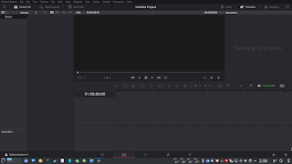

Если вы следите за новостями, то знаете, что знаменитый профессиональный видеоредактор и система цветокоррекции DaVinci Resolve, в своей бесплатной редакции, доступен теперь и для Linux. Однако официально разработчиками поддерживаются только CentOS и Red Hat Enterprise Linux, как системы для профессиональных графических станций. Однако это вовсе не означает, что Resolve не будет работать в других дистрибутивах. И в этой заметке я покажу как установить его в Debian, Ubuntu и их производных.
Важно: программа работает только с проприетарными видеодрайверами Nvidia и AMD. И вообще оптимизирована по большей части под Nvidia, поэтому убедитесь что у вас установлена последняя версия видеодрайвера.
Прежде всего нужно скачать сам редактор. Переходим по ссылке, выбираем версию DaVinci Resolve для Linux. Нас попросят зарегистрироваться. Вводите абсолютно левые данные и качайте архив :). После скачивания и распаковки у вас окажутся установочный пакет и PDF'ка с инструкцией. Она нам не нужна. Открываем терминал в том каталоге, куда распаковали установочный файл и вводим:
sudo sh DaVinci_Resolve_14.0_Linux.sh
Начнётся установка. Программа ставится в каталог /opt и создаёт нужный для запуска ярлык на рабочем столе и в меню приложений. Так как она собирается с учётом CentOS - то требует старые версии некоторых библиотек, в частности libSSL и libPNG. Первую даунгрейдить не нужно, нужно просто создать несколько символьных ссылок:
sudo ln -s /usr/lib /usr/lib64
sudo ln -s /usr/lib/x86_64-linux-gnu/libgstreamer-1.0.so.0 /usr/lib/libgstreamer-0.10.so.0
sudo ln -s /usr/lib/x86_64-linux-gnu/libgstbase-1.0.so.0 /usr/lib/libgstbase-0.10.so.0
sudo ln -s /lib/x86_64-linux-gnu/libssl.so.1.0.0 /usr/lib/libssl.so.10
sudo ln -s /lib/x86_64-linux-gnu/libcrypto.so.1.0.0 /usr/lib/libcrypto.so.10
Далее если у вас Debian 9 - качаем пакет libpng12 отсюда (в самом низу странице, выбрав свою архитектуру) и устанавливаем, например, в GDebi. Юзерам Ubuntu 16.10 (и новее) и производных - сюда.
Вот и вся работа. Можно пользоваться

У приложения отсутствует рамка окна, так что не пугайтесь, это не баг :) Однако в бесплатной линуксовой версии присутствует досадное ограничение: нет возможности экспорта видео кодеком H.264, хотя в Win и Mac версиях эта возможность есть.